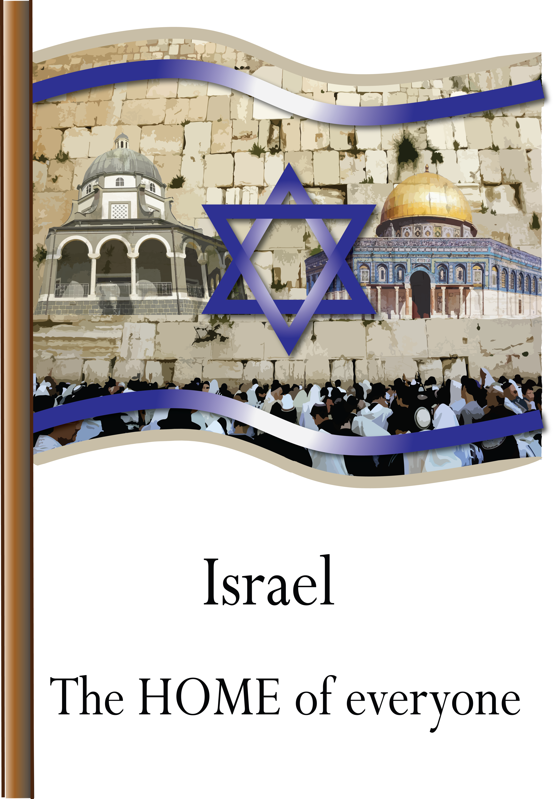

במהלך קורס גרפיקה ממוחשבת, התבקשנו ליצור כרזה ל ACT.IL בסימן 70 שנה למדינה.
יצרתי דגל של ארץ ישראל, ובתוכו ניתן לראות שילוב של כל הדתות שנמצאות בישראל- מסגד אל אקצא, הכותל המערבי וכנסיית הקבר. המשפט אומר ש"ישראל היא הבית של כולם", רציתי ליצור אווירה של אחווה ,שילוב ועם רצון לשלום.
